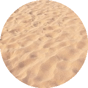

This is one to three player game, where users control tanks. It is a free-for-all match, meaning that each tank
fights to be the last one standing.
There are a lot of computer controlled tanks so make sure to defeat them quickly!
There are bushes, which are obstacles which restrict tank movement. Futhermore, there are sand patches which slow down tank movement.
Bush Obstacle

Sand Patch
As a user tank, you start off with five bullets. After firing, the bullets will reflect off walls and finally disappear after striking a target or a set amount of time. Bullets will slow down as they go through bushes, but sand patches will not affect them.
The bullets replenish after they disappear from the screen. Your own bullets do not kill you.
This game supports up to three players, two will play on the keyboard and one will play on the mouse.
Player 1 Controls (Red Tank)
UP_ARROW_KEY - move forward
LEFT_ARROW_KEY - rotate tank counterclockwise
RIGHT_ARROW_KEY - rotate tank clockwise
DOWN_ARROW_KEY - move backwards
M - shoot bullets
Player 2 Controls (Green Tank)
W - move forward
A - rotate tank counterclockwise
S - move backwards
D - rotate tank clockwise
Q - shoot bullets
Player 3 Controls (Blue Tank)
Mouse Click - Click on screen to move towards cursor
Scroll - shoot bullets